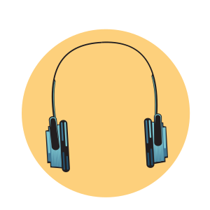
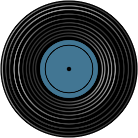

<%= event.artCredit %>
<%= event.num %>
<%= event.albumTitle %>
<%= event.artist %>
<%= event.text %>

<% } %>
<% if(event.num == 6){ %>

<% } %>

Another year of Seattle music is in the books.
Artists we thought we knew switched up their sounds and unveiled new layers. Club favorites came through with records proving they can handle the studio as well as the stage. Newcomers delighted, showing the future of Seattle music is in capable hands, while bastions of Seattle rock and hip-hop delivered on anticipated new albums.
To help us sort through them all, we solicited input from more than 20 writers, radio tastemakers and plugged-in media folks who voted for their Top 10 albums of the year from Seattle and Washington state artists. (Check out the individual ballots here.) Using a sliding points system, we threw their ballots in the ol’ vote counting machine (an off-brand Microsoft Office program and an iPhone calculator) and came up with the best local albums of the year in our second-annual critics poll.
Without further ado, here are the results.
<%= event.artCredit %>
<%= event.num %>
<%= event.albumTitle %>
<%= event.artist %>
<%= event.text %>